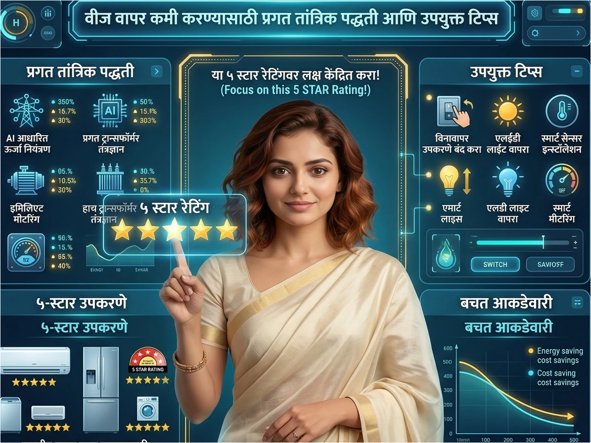

परिचय
वाढत्या उन्हाळ्यामुळे किंवा आधुनिक सुखसोयींच्या साधनांमुळे घरगुती वीज बिलात सातत्याने वाढ होत आहे. मात्र, केवळ उपकरणांचा वापर कमी करणे हाच वीज बचतीचा एकमेव मार्ग नाही, तर प्रगत तांत्रिक पद्धती आणि योग्य व्यवस्थापनाद्वारे आपण बिलामध्ये लक्षणीय कपात करू शकतो. घराचे वायरिंग, उपकरणांची गुणवत्ता आणि उपलब्ध नैसर्गिक स्रोतांचा योग्य मेळ घातल्यास ऊर्जा संवर्धन सहज शक्य होते. या लेखात आपण वीज वापर कमी करण्याचे तांत्रिक मार्ग आणि काही मोलाच्या टिप्स जाणून घेणार आहोत.
१. ऊर्जा व्यवस्थापन बजेट नियंत्रित ठेवण्यासाठी एक प्रभावी माध्यम.
Key Takeaways
- घरामध्ये ऊर्जेचे योग्य ऑडिट (Energy Audit) आणि दैनंदिन वापरावर नियंत्रण ठेवल्यास महिन्याचे बजेट संतुलित राखता येते.
वीज बिलाचा थेट परिणाम आपल्या कौटुंबिक बजेटवर होत असतो. स्मार्ट ऊर्जा व्यवस्थापनाच्या माध्यमातून खर्चावर नियंत्रण मिळवता येते:
- 1 वापराचे वेळापत्रक (Usage Tracking): पीक अवर्स (Peak Hours - जेव्हा वीज कंपन्यांचा दर अधिक असू शकतो किंवा भार जास्त असतो) दरम्यान महत्त्वाच्या उपकरणांचा वापर नियंत्रित करणे.
- 2 स्मार्ट मॉनिटरिंग: आधुनिक स्मार्ट प्लग किंवा एनर्जी मॉनिटरचा वापर करून कोणत्या उपकरणाला सर्वाधिक वीज लागते, याचे विश्लेषण करणे आणि त्यानुसार बजेट आखणे.
तुम्ही दरमहा तुमच्या वीज बिलाचे बजेट निश्चित करून त्यानुसार वापर नियंत्रित करता का?
२. नैसर्गिक संसाधनांच्या वापरातून वीज बचतीचे उद्दिष्ट.
Key Takeaways
- सूर्यप्रकाश आणि नैसर्गिक हवेचा जास्तीत जास्त वापर केल्यास कृत्रिम प्रकाश आणि पंखे/एसी वरील खर्च जवळपास ४०% कमी होऊ शकतो.
पर्यावरणपूरक आणि शाश्वत जीवनशैलीचा अंगीकार करून वीज बचतीचे उद्दिष्ट सहज साध्य करता येते:
- वास्तू रचना आणि वेंटिलेशन: दिवसा घरातील खिडक्या खुल्या ठेवून जास्तीत जास्त नैसर्गिक उजेड आणि खेळती हवा घरात येईल याची काळजी घेणे.
- सोलर पॅनेलचा वापर: छतावर रूफटॉप सोलर सिस्टीम बसवून स्वतःची वीज स्वतः निर्माण करणे, ज्यामुळे ग्रीडवरील अवलंबित्व पूर्णपणे संपुष्टात येते.
- सोलर वॉटर हीटर: गिझर ऐवजी अंघोळीच्या पाण्यासाठी सौर ऊर्जेचा वापर करणे, जे वीज बचतीसाठी अत्यंत फायदेशीर मानले जाते.
तुमच्या घरामध्ये सौर ऊर्जेचा किंवा नैसर्गिक संसाधनाचा वापर केला जातो का?
३. जुन्या वायरिंगमुळे होणाऱ्या वीज गळतीची तांत्रिक कारणे आणि प्रतिबंधात्मक उपाय.
Key Takeaways
- खराब इन्सुलेशन किंवा जुन्या पद्धतीचे वायरिंग घरात सुप्त वीज गळती (Current Leakage) निर्माण करू शकते, ज्यामुळे उपकरणे बंद असतानाही बिल वाढते.
अनेकदा ग्राहक घरात नवीन उपकरणे आणतात, मात्र अंतर्गत वायरिंगकडे दुर्लक्ष करतात. वीज गळतीची मुख्य तांत्रिक कारणे आणि उपाय खालीलप्रमाणे आहेत:
- 1 तार आणि इन्सुलेशन झिजणे: १०-१५ वर्षांपेक्षा जुन्या झालेल्या कॉपर किंवा ॲल्युमिनियम तारांचे इन्सुलेशन खराब होऊन भिंतीला किंवा अर्थिंगला सूक्ष्म प्रवाह मिळतो.
- 2 प्रतिबंधात्मक उपाय (ELCB/RCCB चा वापर): घराच्या मुख्य पॅनेलमध्ये अर्थ लीकेज सर्किट ब्रेकर (ELCB) किंवा रेसिड्यूअल करंट सर्किट ब्रेकर (RCCB) बसवणे अनिवार्य आहे. यामुळे वीज गळती झाल्यास वीजपुरवठा त्वरित खंडित होतो आणि सुरक्षेसोबत वीजही वाचते.
तुम्ही तुमच्या घरातील वायरिंगची तांत्रिक तपासणी तज्ज्ञ वायरमनकडून कधी करून घेतली आहे का?
४. वीज बचतीसाठी फाइव्ह स्टार उपकरणांची निवड.
Key Takeaways
- BEE ५-स्टार मानांकन लाभलेली उपकरणे सुरुवातीला महाग वाटली तरी दीर्घकालीन वापरामध्ये बिलाची मोठी रक्कम वाचवून पैशांची वसुली करतात.
BEE (Bureau of Energy Efficiency) चे स्टार रेटिंग हे उपकरण किती कार्यक्षम आहे हे दर्शवते. १-स्टार ते ५-स्टार उपकरणांमधील फरक समजून घेणे महत्त्वाचे आहे:
- 1 इनव्हर्टर टेक्नॉलॉजी: ५-स्टार रेटिंग असणारे एसी किंवा रेफ्रिजरेटर हे कंप्रेसरची गती गरजेनुसार नियंत्रित करतात, ज्यामुळे पारंपारिक उपकरणांच्या तुलनेत ३० ते ५०% वीज कमी लागते.
- 2 एलईडी क्रांती (LED Lighting): साधे ट्यूबलाईट किंवा बल्ब बदलून ५-स्टार मानांकित एलईडी वापरल्यास प्रकाशाची गुणवत्ता वाढून ऊर्जेचा वापर नगण्य होतो.
तुमच्या घरातील रेफ्रिजरेटर किंवा एसी आधुनिक ५-स्टार इनव्हर्टर तंत्रज्ञानाचा आहे का?
५. उच्च क्षमतेच्या उपकरणांचा सुरक्षित आणि प्रभावी वापर.
Key Takeaways
- एसी, गिझर, वॉटर पंप आणि वॉशिंग मशीन यांसारख्या हेवी उपकरणांचा सुयोग्य वापर वीज बिल निम्म्यावर आणू शकतो.
उच्च क्षमतेच्या (High Wattage) उपकरणांच्या वापराबद्दल खालील तांत्रिक तुलनात्मक कोष्टक अत्यंत मार्गदर्शक ठरेल:
| उपकरण | अयोग्य वापर (जास्त बिल) | स्मार्ट/प्रगत पद्धत (वीज बचत) |
|---|---|---|
| एअर कंडिशनर्स (AC) | १६°C ते १८°C वर चालवणे आणि फिल्टर स्वच्छ न ठेवणे. | २४°C ते २६°C वर सेट करणे. (प्रत्येक डिग्री वाढवल्यास ६% वीज वाचते). |
| रेफ्रिजरेटर (Fridge) | भिंतीला खेटून ठेवणे, गरम अन्न आत ठेवणे आणि वारंवार दार उघडणे. | मागील बाजूस खेळती हवा ठेवणे, अन्न थंड करून ठेवणे आणि मध्यम कूलिंग सेट करणे. |
| पाण्याचा गिझर | तासनतास चालू ठेवणे आणि थर्मोस्टॅट ६५°C पेक्षा जास्त ठेवणे. | वापराच्या १५ मिनिटे आधी सुरू करणे आणि ५०°C च्या मर्यादेवर सेट करणे. |
तुम्ही तुमच्या घरातील एसीचे तापमान नेहमी २४°C किंवा त्यापेक्षा जास्त ठेवता का?
महत्त्वाचे निष्कर्ष
अंधाधुंद वीज वापर करण्याऐवजी स्मार्ट मीटरिंग आणि घरगुती वापराचे वेळापत्रक निश्चित केल्यास मासिक बजेट आटोक्यात राहते.
घराचे जुने वायरिंग आणि ईएलसीबी (ELCB) सर्किट ब्रेकरची कमतरता हे छुपे वीज चोर आहेत; त्यांची वेळेत दुरुस्ती करणे अत्यंत आवश्यक आहे.
उच्च क्षमतेच्या उपकरणांचे तापमान आणि वापरण्याची पद्धत यात किरकोळ बदल करून देखील दरमहा शेकडो युनिट्सची बचत करता येते.
पुढचं पाऊल:
आजच तुमच्या घरातील मुख्य उपकरणांचे स्टार रेटिंग तपासा आणि एसी चालवताना तापमान २४ अंश सेल्सिअसवर सेट करण्याची सवय लावा. शक्य असल्यास, तुमच्या घराचे अर्थिंग आणि वायरिंग सुरक्षित आहे की नाही याची चाचणी मान्यताप्राप्त इलेक्ट्रिशियन कडून करून घ्या.
People Also Ask
होय, टीव्ही, सेटअप बॉक्स, किंवा मायक्रोवेव्ह केवळ रिमोटने बंद केल्यास ते स्टँडबाय मोडवर राहतात आणि सतत काही प्रमाणात वीज ओढत असतात. त्यामुळे मुख्य स्विच बोर्डवरूनच वीज पूर्णपणे बंद करावी.
साधारणपणे, ५-स्टार उपकरण हे ३-स्टार उपकरणाच्या तुलनेत १५% ते २०% अधिक कार्यक्षम असते. प्रदीर्घ आणि सतत वापरामध्ये (उदा. एसी किंवा फ्रीज) ५-स्टार उपकरणांमुळे दरमहा बिलात लक्षणीय घट होते.
हे उपकरण भिंतीतील ओल किंवा खराब वायरिंगमुळे होणारी सूक्ष्म वीज गळती (Current Leakage) अचूकपणे शोधते. गळती आढळताच ते ट्रिप होते, ज्यामुळे न वापरता वाया जाणारी वीज वाचते आणि जीवितहानीचा धोकाही टळतो.